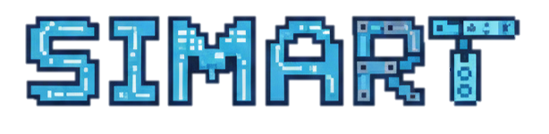
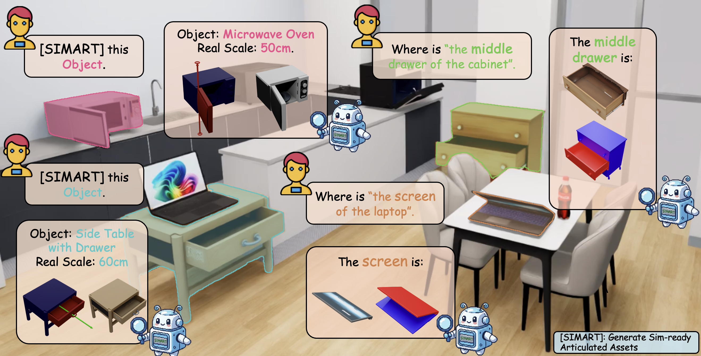
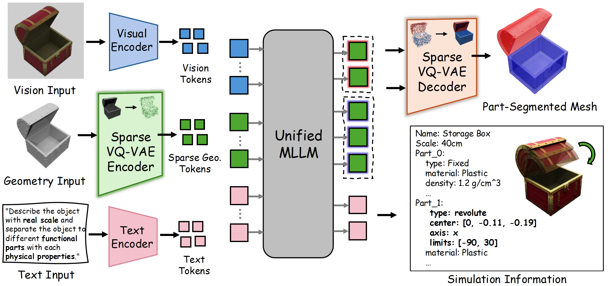
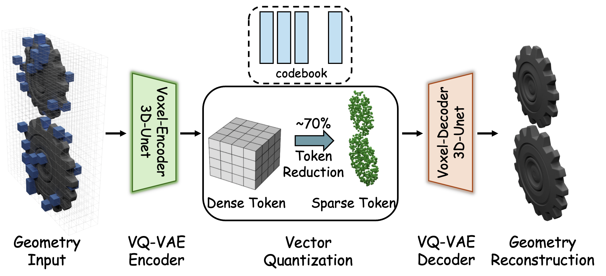

High-quality articulated 3D assets are indispensable for embodied AI and physical simulation, yet 3D generation still focuses on static meshes, leaving a gap in "sim-ready" interactive objects. Most recent articulated object creation methods rely on multi-stage pipelines that accumulate errors across decoupled modules. Alternatively, unified MLLMs offer a single-stage path to joint static asset understanding and sim-ready asset generation. However dense voxel-based 3D tokenization yields long 3D token sequences and high memory overhead, limiting scalability to complex articulated objects. To address this, we propose SIMART, a unified MLLM framework that performs part-level decomposition and kinematic prediction jointly. By introducing a Sparse 3D VQ-VAE, SIMART reduces token counts by 70% vs. dense voxel tokens, enabling high-fidelity multi-part assemblies. SIMART achieves state of-the-art performance on PartNet-Mobility and in-the-wild AIGC datasets, and enables physics-based robotic simulation.


SIMART irst encodes 3D geometry into a compact representation using the Sparse 3D VQ-VAE to minimize token redundancy while preserving critical surface details. These geometric tokens are then fused with visual and textual inputs through a unified MLLM backbone to perform part grounding and joint parameter estimation. The final output consists of structured URDF metadata and decomposed segments, enabling deployment into physics-based simulators and interactive robotic environments.

Architectural overview of the Sparse 3D VQ-VAE for high-fidelity geometric encoding. The pipeline employs a 3D-UNet voxel encoder to map geometric inputs into a discrete latent space through vector quantization with a specialized codebook.
Interactive tips: Orbit — Left click & drag | Zoom — Mouse wheel or pinch